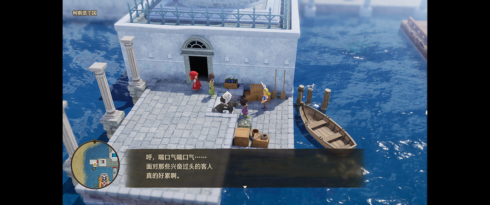
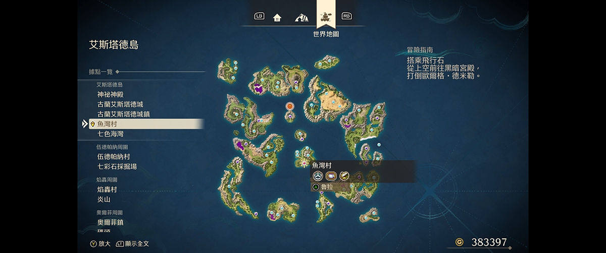
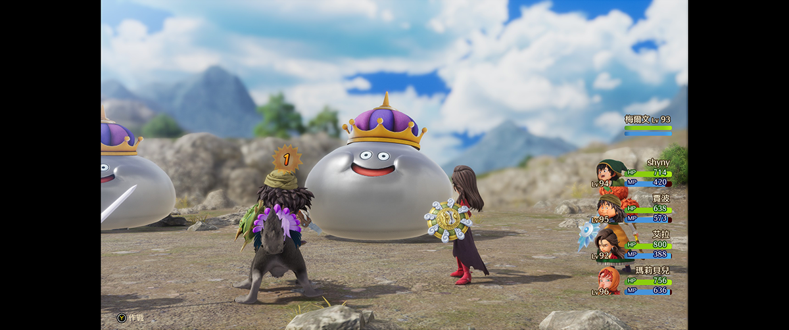
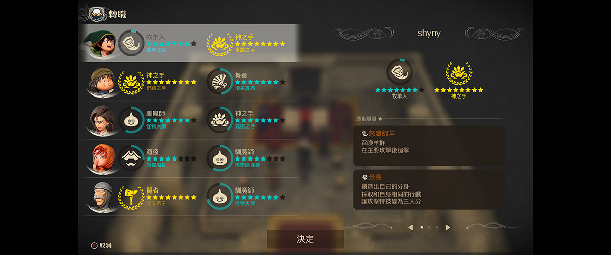
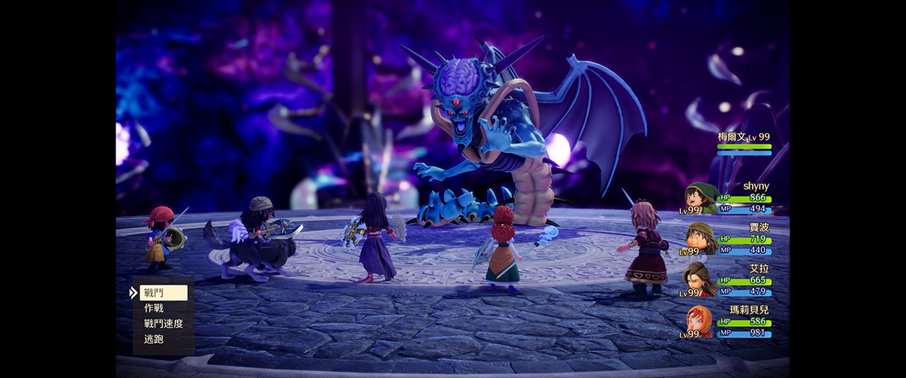

游戏概览
《勇者斗恶龙VII Reimagined》是SE为庆祝系列40周年推出的完全重制版。原作于2000年登陆PS1，以超过100小时的超长流程和碎片化的叙事著称；2016年的3DS版进行了首次重制，而2026年的这一版则是一次彻底的"重新构想"（Reimagined）。
"这不仅是一次画面的升级，更是一次对游戏节奏、战斗系统和叙事结构的全面重构。SE试图回答一个问题：如何让现代玩家接受一款26年前的JRPG巨作？"
— IGN 评测游戏最核心的改变是流程压缩：原版100+小时的内容被精简至55小时左右。这一改动引发了两极分化的评价——新玩家欢呼终于能通关，老玩家则惋惜被删减的剧情和探索。

核心改动解析
相比原版和3DS版，Reimagined 在多个维度进行了大刀阔斧的改革：
节奏优化
原版前3小时的"无事发生"开场被压缩至30分钟，谜题简化，随机遭遇改为明雷
视觉重塑
采用手工感3D风格，角色由鸟山明重新设计，场景色彩更加鲜明饱满
全语音演出
主线剧情全程配音，主角也终于有了台词，不再是"哑巴英雄"
交响乐音轨
椙山浩一的经典配乐由交响乐团重新录制，音质大幅提升
叙事调整
部分支线被删减，主线剧情更加紧凑，但牺牲了一些世界观铺垫
地图重制
世界地图改为3D可旋转视角，迷宫结构简化，减少迷路 frustration

战斗系统革新
Reimagined 的战斗系统可能是改动最大的部分。原版经典的回合制被保留，但加入了更多策略元素：
可视化行动顺序：战斗界面现在显示敌我双方的行动条，玩家可以预判出手顺序，策略性大幅提升。这一改动让 buff/debuff 的时机选择变得至关重要。
怪物行为变化：敌人不再只是无脑攻击，会根据战况使用不同技能。部分 Boss 战加入了阶段转换机制，战斗节奏更加紧凑刺激。
自动战斗优化：AI 策略更加智能，可以设置优先级（优先治疗/优先输出等），刷级时的操作负担大幅降低。

"战斗系统的改动让这款26年前的游戏有了现代JRPG的策略深度，但又保留了DQ系列一贯的简洁易懂。这是我认为重制版最成功的部分。"
— 个人通关体验职业系统：Moonlighting
职业系统一直是DQ7的核心卖点。Reimagined 保留了转职机制，但引入了全新的"Moonlighting"（兼职）系统：
角色现在可以同时拥有主职业和副职业，副职业的技能和特性可以部分继承。这一改动极大地拓展了Build的可能性——你可以打造一个会治疗魔法的战士，或是一个能物理输出的法师。
不过，这一系统也有代价：怪物职业被删减。原版中通过捕捉怪物学习特殊技能的系统被移除，部分老玩家对此颇有微词。SE的解释是为了平衡性考虑，但确实损失了一些收集乐趣。

优缺点总结
✓ 优点
- 流程节奏大幅优化，终于能通关了
- 战斗系统现代化，策略性提升
- 兼职系统拓展了Build深度
- 全语音+交响乐，沉浸感满分
- 画面风格独特，鸟山明人设依旧经典
- 明雷系统告别踩雷 frustration
✗ 缺点
- 部分支线删减，世界观铺垫不足
- 怪物职业系统被移除
- 老玩家可能觉得"缩水"
- 部分谜题过于简化，失去探索乐趣
- 定价偏高（$59.99）
- 剧情跳跃感明显，新玩家可能困惑
最终 verdict
《DQ7 Reimagined》是一次大胆的重制实验。SE没有简单地进行画面升级，而是直面原版的核心问题——节奏拖沓、门槛过高——并给出了自己的答案。
对于新玩家，这是体验DQ7的最佳方式。55小时的流程在JRPG中依然算长，但已经是可以接受的范围。现代化的战斗系统和保姆级引导让入门门槛大幅降低。
对于老玩家，这是一次复杂的体验。你会怀念被删减的内容，但也会惊喜于战斗系统的进化。如果把它当作一款"基于DQ7改编的新游戏"而非"DQ7的高清版"，心态会平和很多。

🎯 推荐人群
JRPG爱好者 · 想入坑DQ系列的新玩家 · 能接受"缩水版"的老粉丝
不推荐：追求原汁原味怀旧体验的玩家 · 对流程长度有执念的硬核粉
总评：8.5/10 — 一场成功的重塑，但代价是牺牲了一些灵魂